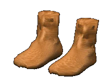

 |
|
|
Обработка кожи |
|
|
| Производство по
выделке кож и производство кожаных изделий было
широко распространено в Древней Руси XII века. Для
сырья русские кожевники использовали шкуры
коней, коров и быков. Для изготовления и дальнейшей обработки дубленой и сыромятной кожи кожевенники того времени использовали специальные ножи, иглы, наборы деревянных колодок, штампы для тиснения кожи, шаблоны кроя, сапожные гвозди и пробойники, сапожные доски и нитки. |
|
|
Текст и
иллюстрации (c) 1997 Snowball Interactive Entertainment, Inc. |